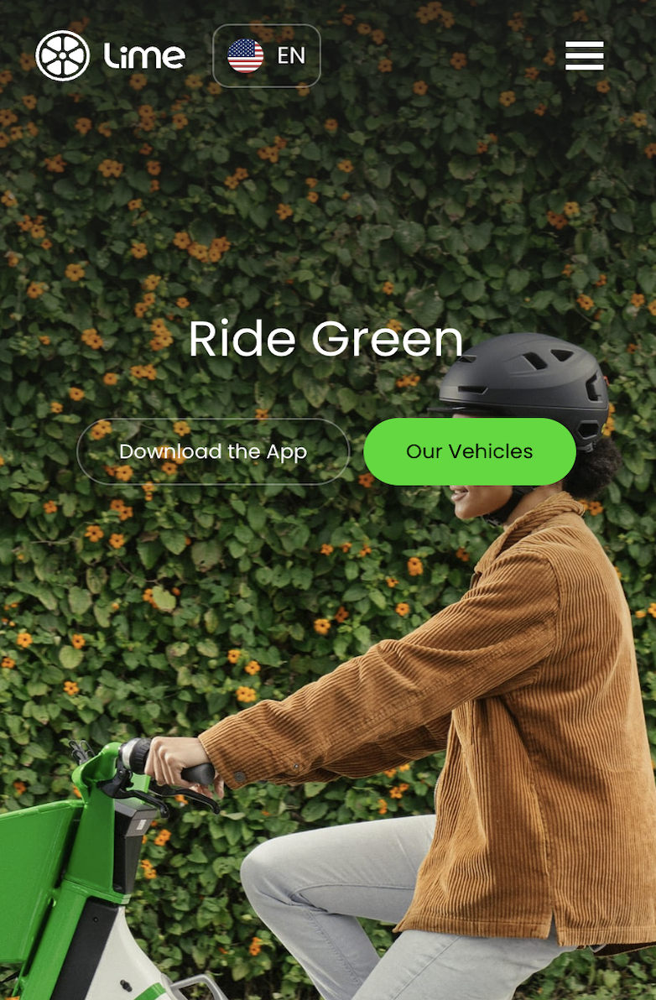
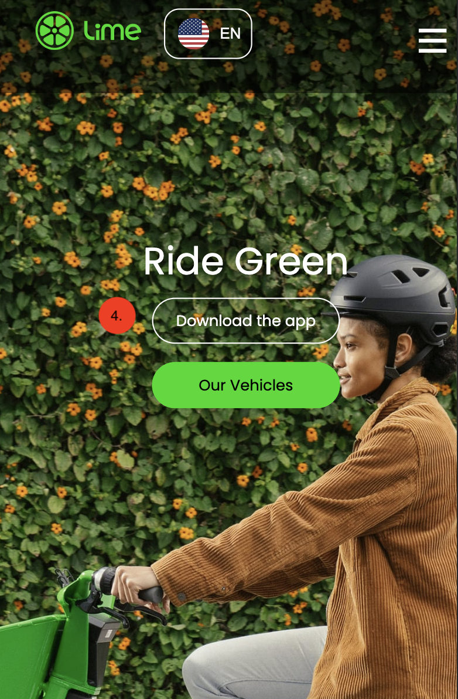
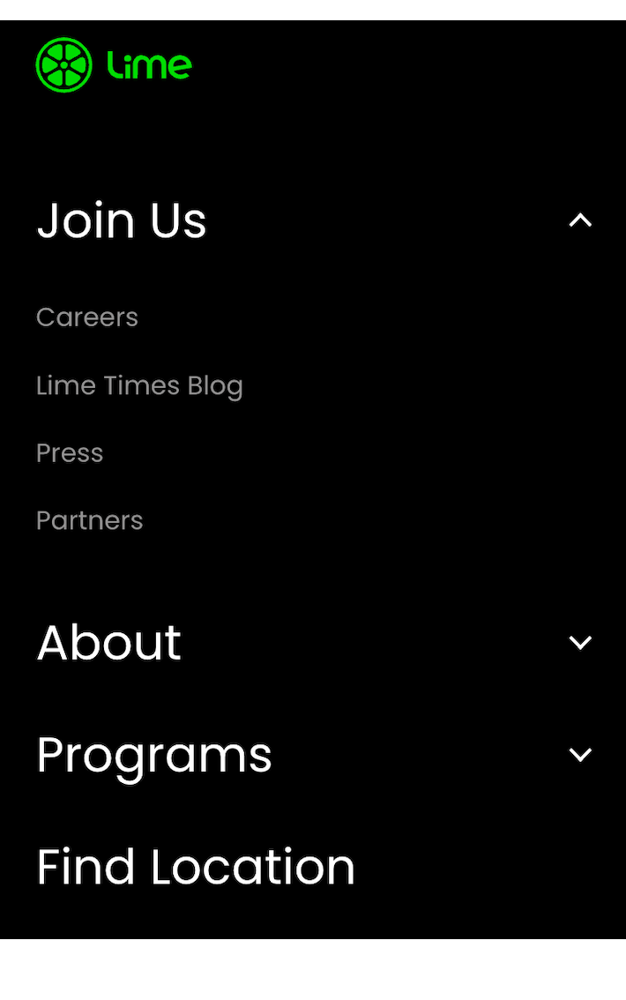
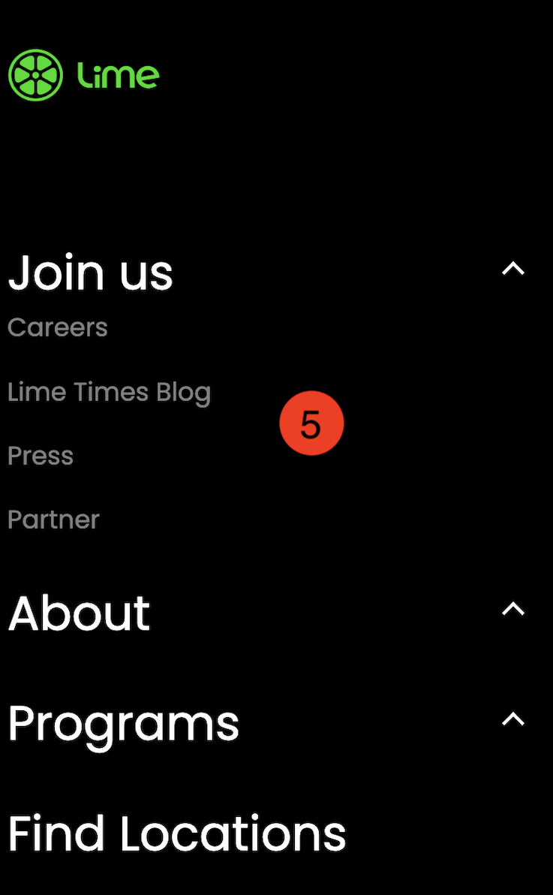
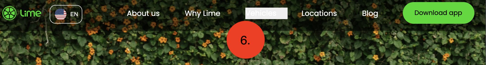

-
Overview
For my front-end development course, I had to recreate and improve a home page and a detail page of a website. I used Li.me website for this. My learning objectives were:
- Being able to write neat html, css and javascript code.
- Making the website responsive.
- Making the website accessible for people with sensory impairments. Disorders that make it difficult to navigate a website.My role
This was an individual project, so everything was made by me.
Used tools
Github
Click here for the end result Adobe Creative Cloud
Adobe Creative Cloud Html, Css, Javascript
Html, Css, Javascript Miro
MiroWant to work together?
Get in touch with me! -
Improving Proces
Accessibility test
I gave a fellow student a few accessibility tests while navigating through the Lime website. While the test person tested the website, I made notes of what could be improved or noticed.
-
How I tested the impairments
On the image below you can see how I mimicked the impairments for testing the accessibility from li.me website.
-
Test Results
List of areas for improvement that emerged in the test:
- With many vision limitations, pieces of text on the website were too small to read.
- Some buttons were difficult to distinguish with the background.
- The hover colour is too small a change, to see the difference clearly.
- There is no darkmode on this website. -
Main Iterations


Iteration 1: I made a more noticeable difference between navigation and background picture. By using a darker background behind the navigation bar and larger font usage.
 
Iteration 2: I made bigger buttons and more space between them, so there is less chance of clicking the wrong one.
Iteration 3: I shortened the first part of the page so the user can better see that there is an option to scroll down.Iteration 4: On the mobile size, I have also enlarged the buttons and placed them below each other to make it easier to press the right button. So it can be better used by people with bad moteristics.
 Iteration 5: In the footer navigation, I enlarged the font so that visually impaired people could read it better.
Iteration 6: I made the hover in the navigation bar clearer so it is still visible to the visually impaired.
-
Full code proces in dutch:
Click here to read
-